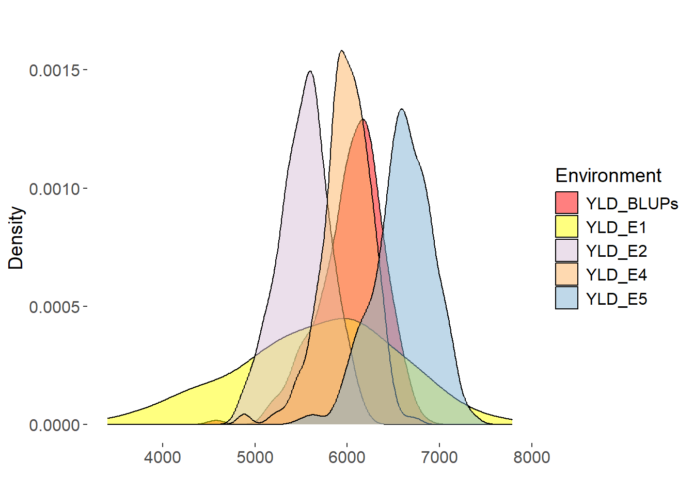
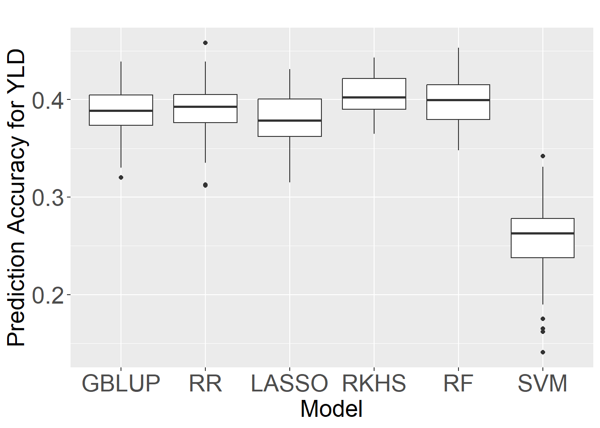

Genomic prediction of yield in diverse spring wheat lines across multiple environment
Genomic selection
yield prediction
spring wheat
multi-environment trials
Author
Yaotian Gao
Published
April 28, 2024
1. Preamble
Wheat (Triticum aestivum L.), responsible for a significant portion of global caloric intake, is increasingly threatened by both natural and anthropogenic factors, including climate change and geopolitical unrest (Zhang et al. 2022). These challenges underline the urgency for innovative approaches in wheat breeding, beyond the capabilities of traditional methods. Genomic Selection (GS) represents a transformative approach, leveraging high-throughput genotyping technologies to overcome the limitations of conventional breeding by enabling more precise genetic selection for desired traits(Heffner et al. 2009).
Several factors can influence the prediction accuracy of GS models, including population structure, training population size, and the choice of prediction models (Plavšin et al. 2021). Selecting an appropriate prediction model is a relatively straightforward approach to improve prediction accuracy among these factors. Traditional GS models like Genomic Best Linear Unbiased Prediction (GBLUP) and Ridge Regression (RR) have been foundational, yet they often fail to capture non-linear genetic interactions critical for complex traits like yield (Desta and Ortiz 2014). Emerging models such as Random Forest (RF) and Reproducing Kernel Hilbert Space (RKHS) offer potential improvements by accounting for these complexities . This study aims to explore the predictive capabilities of these advanced models, focusing exclusively on wheat yield (YLD) as a primary trait of interest.
The data for this analysis stems from a comprehensive dataset encompassing 250 spring wheat lines from diverse genetic backgrounds, evaluated under varying environmental conditions. Six statistical models, namely Ridge Regression (RR), Reproducing Kernel Hilbert Space (RKHS), Genomic Best Linear Unbiased Prediction (GBLUP), Least Absolute Shrinkage and Selection Operator (LASSO), Support Vector Machine (SVM), and Random Forest (RF), were evaluated to identify the optimal model for YLD. Through rigorous analysis and visualization of the genetic predictors of yield, we anticipate fostering a deeper understanding of GS’s potential to address pressing food security challenges.
2. Data and Code
Plant Material
This study involves 250 spring wheat varieties and elite lines, developed by breeding programs in the Northwestern Pacific region of the United States and the International Maize and Wheat Improvement Center (CIMMYT) in Mexico City, Mexico. The collection includes three market categories of spring wheat cultivated in the Americas: soft white spring, hard white spring, and hard red spring, with over 50% of the lines serving as foundational lines for regional variety development programs.
Phenotypic Evaluation
The wheat panel was evaluated across five distinct environments, labeled E1 to E5 (E1 = 2016, E2 = 2017, E3 = 2021, E4 = 2022, E5 = 2023), at a field trial location in Aberdeen, Idaho (42°56’36” N and 112°50’22” W). The trial layout was a randomized complete block design with two replicates. Each genotype was planted in 3.0 m plots consisting of seven rows, with a row spacing of 21 cm. Yield per hectare (kg/ha) was measured in four of these trials (E1, E2, E4, E5).
Genotyping
The population was genotyped using Illumina’s 90K iSelect SNPchip. Raw data was provided by the USDA/ARS Cereal Crops Research Unit and was analyzed using Genome Studio v2.0.5(Illumina 2010) for processing its raw data. Polymorphic markers were identified as exhibiting clear, distinct clusters in Genome Studio, with a minimum distance of 0.20 between the polar coordinates of normalized theta intensities. Markers were further filtered based on missing data (>10%) and minor allele frequency (<5%) using TASSEL v5.2.89 (Bradbury et al. 2007).
Data Dictionary
Field
Description
Data Type
ENT
Unique identifier for each wheat variety, numbered from 52001 to 52250
Integer
Source
Source of the plant material, including universities (UI, UCD, WSU), CIMMYT, MSU, USDA, and other sources (commercial varieties and international germplasm)
String
YLD_E1
Yield in kilograms per hectare for environment E1 (2016)
Float
YLD_E2
Yield in kilograms per hectare for environment E2 (2017)
Float
YLD_E4
Yield in kilograms per hectare for environment E4 (2022)
Float
YLD_E5
Yield in kilograms per hectare for environment E5 (2023)
Float
YLD_BLUPs
Best Linear Unbiased Prediction (BLUP) values for yield, calculated from the yields of environments E1, E2, E4, and E5. NA indicates not applicable.
Float
3. Results
Phenotypic analysis
Code
library(dplyr)library(tidyr)library(ggplot2)data <-read.csv("YLD.csv")data[grepl("^YLD", names(data))] <-lapply(data[grepl("^YLD", names(data))], as.numeric)long_data <- data %>%pivot_longer(cols =starts_with("YLD"),names_to ="Year_Rep",values_to ="Value" )long_data <- long_data %>%mutate(Year =sub("-.*", "", Year_Rep)) # Define a vector of colors including the new onemy_colors <-c("YLD_BLUPs"="Red","YLD_E3"="#8DD3C7","YLD_E4"="#FDB462","YLD_E5"="#80B1D3", "YLD_E1"="yellow", "YLD_E2"="#D8BFD8")# Density plot with manual colorsp2 <-ggplot(data = long_data, aes(x = Value, fill = Year)) +geom_density(alpha =0.5) +scale_fill_manual(values = my_colors) +labs(title ="", x ="", y ="Density",fill="Environment") +theme(plot.background =element_rect(fill ="white", colour =NA),panel.background =element_rect(fill ="white", colour =NA),legend.title =element_text(size =14), # Adjust the size of the legend titlelegend.text =element_text(size =12), # Adjust the size of the legend textaxis.title.x =element_text(size =14), # Adjust the size of the x-axis titleaxis.title.y =element_text(size =14), # Adjust the size of the y-axis titleaxis.text.x =element_text(size =12), # Adjust the size of the x-axis text/labelsaxis.text.y =element_text(size =12) # Adjust the size of the y-axis text/labels )# Print the plotsprint(p2)

Trait
Env
Mean
Range
IQR
CV
Skewness
Kurtosis
YLD
E1
5687.207
3560.188-7753.867±839.68
1115.165
0.148
-0.258
-0.285
E2
5528.63
4850.76-6181.51±272.1
356.24
0.05
-0.18
-0.22
E4
6012.449
5512.441-6517.149±178.2
216.375
0.03
-0.017
0.31
E5
6630.67
5603.001-7432.273±327.87
428.973
0.049
-0.243
-0.11
BLUPs
6023.156
5340.134-6550.368±223.86
290.7
0.037
-0.292
-0.122
Yield (YLD) is a critical agronomic trait determining the superiority of wheat varieties. The BLUPs for YLD ranged from 5340.134 to 6550.368 kg/ha. Lowest YLD was observed in E2, with a mean YLD of 6023.156 kg/ha, and highest YLD was observed in E5, with a mean YLD of 6630.67 kg/ha. The distribution YLD demonstrated the most significant variability, with a left-skewed and leptokurtic distribution.
The BLUPs values for YLD trait showed high correlations with the trait values across different environments, indicating their effectiveness in integrating phenotypic data from multiple environments for subsequent genetic analysis. Although the correlations between YLD BLUPs and YLD in some environments were slightly lower, they still represented the overall performance of YLD reasonably well
Principal component analysis (PCA) based on the genotypic data revealed a clear population structure among the 249 spring wheat lines (Fig. 5). The first three principal components (PCs) explained 6.3%, 5.4%, and 4.4% of the total genetic variance, respectively. The 3D PCA plot showed distinct clustering of lines according to their sources. The number of lines within each cluster ranged from 10 (Other) to 111 (UI). The largest cluster consisted of 111 lines from the University of Idaho (UI), followed by 34 lines from UC Davis (UCD) and 26 lines from Washington State University (WSU).
Df
Sum Sq
Mean Sq
F value
Pr(>F)
R2
6
1383462.467
230577.0778
5.068379905
6.41E-05
11.1%
242
11009366.68
45493.25073
NA
Analysis of variance (ANOVA) revealed that the population structure had significant effects on all five traits analyzed (P < 0.001) .
Comparison of Genomic Prediction Models
Code
library(reshape2)library(ggplot2)trait=c("YLD")data <-read.csv(paste0("compare.YLD.16Modify.17.22.23.BLUP.csv"), header =TRUE)data_melted <-melt(data)p<-ggplot(data_melted, aes(x = variable, y = value)) +geom_boxplot() +theme(axis.text.x =element_text(angle =0, size =20), axis.text.y =element_text(size =20), axis.title.x =element_text(size =20), axis.title.y =element_text(size =20)) +labs(x ="Model", y =paste0("Prediction Accuracy for ",trait), title ="")print(p)

Six statistical models, including GBLUP, RKHS, RF, RR LASSO, and SVM, were evaluated using a five-fold cross-validation scheme with 50 replications to identify the optimal model for predicting HD, PHT, TKW, tSNS, and YLD based on the BLUPs of phenotypic data. The SVM model consistently showed the lowest prediction accuracies，while RKHS and RF demonstrated similar and superior performance compared to the other models, including the widely used GBLUP and RR
Considering the comparable performance of RKHS and RF, we selected RF as the optimal model for genomic prediction in this study. Second, Charmet et al.(2020a) previously evaluated the computational efficiency of various prediction methods using a set of 47,839 markers and 100 independent 10-fold cross-validations. They found that RF (382 minutes) was considerably less computationally intensive than RKHS (637 minutes), making RF a more practical choice for large-scale genomic prediction applications.
In this study, we investigated the prediction accuracy of yield-related traits (HD, PHT, TKW, and tSNS) and yield (YLD) across different environments using the optimal model determined in the previous section (Random Forest with 80% of the population as the training set). Prediction accuracies are reported as the median value.
Single-environment models were trained by training and predicting within the same environment. For YLD, the prediction accuracies were highest for environment E1 and BLUPs, respectively. BLUPs outperformed 80% of the evaluation environments.When models were trained in one environment and used to predict in different environments, substantial variation in prediction accuracy was observed across environment combinations for all traits. For YLD, prediction accuracy ranged from -0.052 to 0.565 for different training-testing environment combinations, and from 0.189 to 0.424 when using BLUPs to train the model.Overall, BLUPs were best suited for training models to predict values in unknown environments, whether using single-environment models or cross-environment models.
4. Conclusion
Wheat is a staple food crop worldwide, with its yield improvement being crucial for food security. Genomic selection accelerates the breeding process and enhances genetic gains in wheat. This study demonstrated the potential of genomic prediction models, particularly Random Forest, in predicting yield. And BLUPs data is the best data set for training and prediction.
5. Reference
Bradbury PJ, Zhang Z, Kroon DE, Casstevens TM, Ramdoss Y, and Buckler ES. TASSEL: software for association mapping of complex traits in diverse samples. Bioinformatics. 2007:23(19):2633–2635. https://doi.org/10.1093/bioinformatics/btm308 Charmet G, Tran L-G, Auzanneau J, Rincent R, and Bouchet S. BWGS: AR package for genomic selection and its application to a wheat breeding programme. PloS one. 2020:15(4):e0222733. https://doi.org/10.1371/journal.pone.0222733 Desta ZA and Ortiz R. Genomic selection: genome-wide prediction in plant improvement. Trends in plant science. 2014:19(9):592–601. https://doi.org/10.1016/j.tplants.2014.05.006 Heffner EL, Sorrells ME, and Jannink J-L. Genomic Selection for Crop Improvement. Crop Science. 2009:49(1):1–12. https://doi.org/10.2135/cropsci2008.08.0512 Illumina. Introduction to GenomeStudio Software. 2010. Plavšin I, Gunjača J, Šatović Z, Šarčević H, Ivić M, Dvojković K, and Novoselović D. An overview of key factors affecting genomic selection for wheat quality traits. Plants. 2021:10(4):745. https://doi.org/10.3390/plants10040745 Zhang T, He Y, DePauw R, Jin Z, Garvin D, Yue X, Anderson W, Li T, Dong X, Zhang T, et al. Climate change may outpace current wheat breeding yield improvements in North America. Nature Communications. 2022:13(1):5591. https://doi.org/10.1038/s41467-022-33265-1